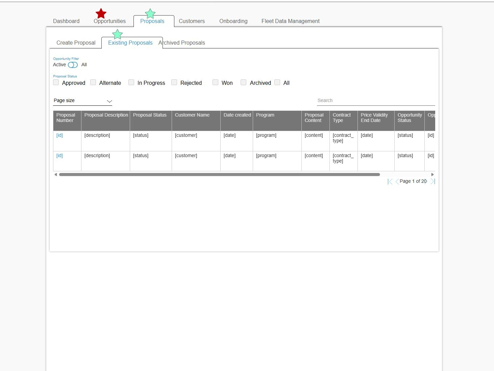
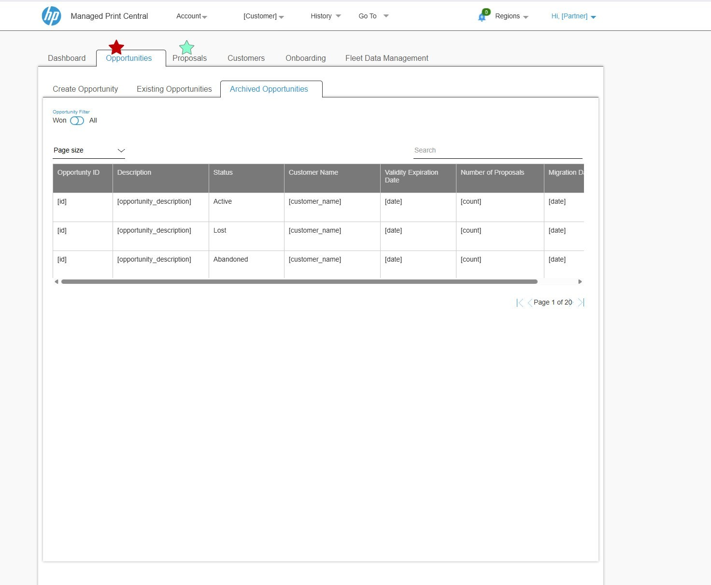
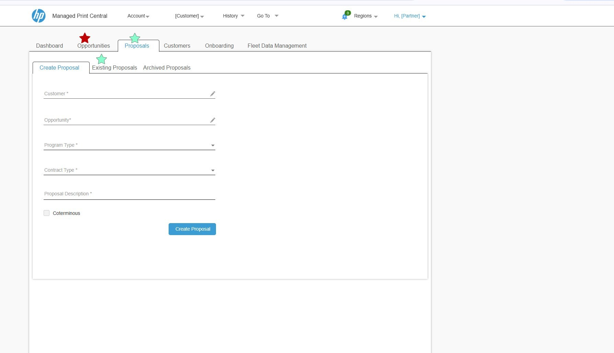

HP Managed Print Central: one lifecycle, two products
HP's managed print business sells and runs print fleets for large companies. The journey from first opportunity to active contract was spread across spreadsheets, email and separate portals. I worked on Managed Print Central, two connected platforms: one for sales (PMPS) and one for running contracts (CMPS). The application was always live, so I designed enhancements in Axure RP that were tested before handoff and then released into it.
Sales reps and contract managers worked across spreadsheets, email and separate portals.
Interviews with three roles, a requirements matrix, and enhancements to both platforms, designed in Axure RP from one shared set of components that matched the coded components.
Each change went through QA testing with the BA and the team before handoff, then was released into the live application.
Three roles pulling in different directions
I interviewed HP sales reps, contract managers and their managers to map how work actually moved. I listed every tool being replaced and built a requirements matrix that tied each user need to a feature, which became the shared checklist for product and engineering.
The biggest decision was structural
One tool or two?
Sales reps and contract managers think about the same customer at different moments. One app would have buried each group's work under the other's. The Onboarding module makes the hand-over between them visible.
Hide columns or keep them?
Reps compared proposals across columns. Hiding them meant opening records one at a time, so we kept the density.
Toggle or dropdown for the main filter?
Active vs. All flips constantly; status filters change less. Two tiers matched how often each one is used.
Long create form or short?
A short form gets the record created. Details are added in the proposal builder once the deal is real.
Annotated wireframes from the project
These are the actual screens used in stakeholder reviews and development briefings. Customer and partner details are placeholders.

1234- Toggle for the frequent filter. Active vs. All, matching the Opportunities screen.
- Multi-select status. Approved, Alternate, In progress, Rejected, Won, Archived.
- Ten columns, horizontal scroll. Density was a deliberate trade-off.
- Pagination with page size for accounts with long proposal histories.

1234- Won / All toggle on archived records.
- Three sub-tabs for every module: Create, Existing, Archived.
- Statuses in plain words: Active, Lost, Abandoned.
- Consistent pager across both platforms.

123- Linked fields pull customer and opportunity data instead of re-typing it.
- Coterminous, an enterprise contract option, as a simple checkbox.
- One primary action, so the next step is never ambiguous.
One component set, matched to the code
Axure was the client's sign-off format, but the UI was designed in Figma first. I built the shared components (module tabs, filters, table) as Figma components with variants, used them in both PMPS and CMPS screens, and recreated the same patterns in the Axure prototypes for review. All of it followed HP's Veneer design system.
Because the application was already live, the coded components were the source of truth. I checked the Figma components and Axure prototypes against them and kept names, states and spacing matching, so each enhancement could be built with existing components instead of new one-offs.
Frame
Module tabs❖
Auto layout⋮⋮
Toggle filter❖
Status filter group❖
Auto layout⋮⋮
Data table❖
Always live, improved release by release
The application was always live. I designed each enhancement as a clickable Axure RP prototype. The BA and the team tested it in QA before handoff, and then it went into the live application. Onboarding needed the most revision. The handover between sales and contracts was a new idea for users, and it took two rounds to make it clear.
“Her ability to map two completely different user types and design separate but coherent interfaces showed a maturity of thinking I rarely see.”Shakila ShanmugnathanUI/UX Lead, HP Managed Print Services